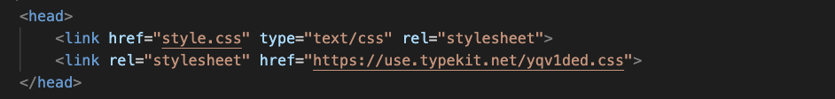
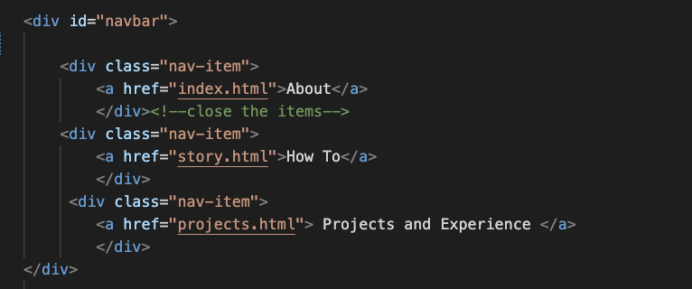
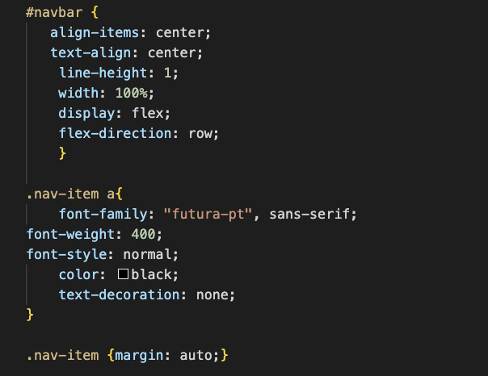
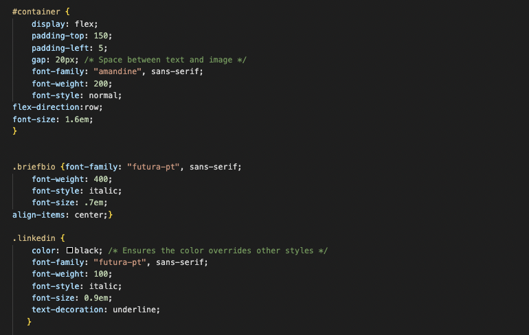

Josephine White
How I made my "About" page: Yes, the page right next to this one ;)
So, you want to build a sleek, personal page that showcases your personality and even your music taste? Here’s a step-by-step guide on how I built mine using HTML and CSS, with some tips I found helpful for making it visually appealing and responsive.
Now, I want to preface, in no way am I a seasoned digital journalist, in fact this is one of my first webpages - however I did learn a LOT while creating this portfolio and thought I'd share my learnings with you so you don't make the same mistakes I did. Let's get into it!
1. Your HTML is the backbone of your page. Here’s how I made mine:
- Header with my name
- A navigation bar for easy access
- One container with my photo, brief bio and linkedin
- Embedded spotify playlists to show my music taste
Sounds easy, but VS code and I were fighting for a while to make this happen. Firstly, you need to make sure you make and link your CSS file (where you'll do all your web-styling) and any fonts you'll use on the page. I grabbed my fonts Futura and Amandine from Adobe Fonts, but there are plenty other platforms where you can grab fonts. Below is a screenshot of the code I used to set up my page.
{kind=link}
Now that you've got your page all set up. It's time to get into the fun stuff. It is all about order. What really helped me when making my page was thinking top to bottom when coding. It might feel obvious - but it kept me from getting lost in my code.
a. My name aka the easiest part!
I just used a simple "h1" tag, typed my name, and closed the tag. Easy peasy for now - I'll go into how I styled it in the CSS section.
b. Navigation Bar
This part was really tricky for me. Luckily my angel of a professor Matt Kiefer did a demo on how to make the navigation bar. Below I've put a screenshot of the HTML code we used. Again, the real styling magic happens in CSS so hang tight!
{kind=link}
c. The container
This part was by far the hardest part for me on the whole page. What is going to be KEY for you is an understanding of these lovely things called "divs." A "div" (short for "division") is like a flexible container that helps organize content on a webpage. Think of it as a box that groups elements together so you can style or position them more easily using CSS.
Now, there are different types of divs. For this particular section I used a general div ID to encompass everything in my container (photo, brief bio, and linkedin) and then I used several div classes to make smaller containers within my div id. It's super important to keep track of your divs or you'll get lost.
I made a div id named "container" to encompass my sliding image that I created with Knightlab's Juxtapose tool, as well my brief bio and my Linkedin. Don't worry, Knightlab has instructions on their page about how to embed your Juxtapose onto your web-page.I then made a nested div class that included just my brief bio. I also made a seprate div class that included just my linkedin profile link. It seems like I'm using a lot of divs (and I am) but you'll understand why in then CSS section. You can use a simple "href" to embedd your Linkedin URL. Remember to close your divs along the way! I closed my initial div id after my last div class. I know it sounds like a lot - but divs are REALLY important for styling.
In case you need a visual - below is the HTML I used for my container.

d. Spotify playlists
Since music is really important to me, I knew I wanted to include a "What I've been listening to lately" section on my homepage. Luckily this is easy as pie. I simply made my headline and then made a div class named "playlists." In this div class I put the different embedd codes to the playlists I wanted displayed. Lucky for us, Spotify gives us these embedd codes, so all you have to do is copy and paste!
2. The real magic is in CSS
Now for the fun stuff! CSS is what you use to style your page. It's where you orient your items, pick colors, and so much more!
a. My name
I used "align-items: center;" and "text-align:center;" to make sure my text was in the middle of the page. I added some padding from the top because I didn't want my name hugging the top of the screen. Since I already linked my fonts, they were super easy to apply. With one line of code: "font-family: "amandine", sans-serif;" my font was applied. To play around with font-sizing all you have to do in "font-size:__em", and that will basically size your font up and down from the baseline size assigned by CSS.
b. Navigation Bar
CSS is the reason my navbar looks so pretty. Remember that my nav bar is a bunch of nested div classes in a larger div id so I had to stylize on two different fronts. For my div id I simply called my div by doing "#navbar" and then used the code in the screenshot below to put it in the right place. Now it'll look weird when you apply this initially, it's because we haven't used "margin:auto;" on the div class level to space our items out. Here's what the complete css code for the nav bar looks like.
{kind=link}
c. The container
This was by bar the hardest part of making this page because when using so many divs its easy to forget what div id's and classes affect what on your page. My biggest tip here is to have your preview pulled up in the window beside where you're coding. This way, you'll be able to see the immediate effects of your actions. My larger div id called container took care of aligning my items in a row. Your best friends when trying to align multiple items are going to be the "display:flex; and flex-direction:___" commands. I used "flex-direction:row" to make sure that my items were in row format.
Now, I had to make another div class with my brief bio because I wanted to include multiple paragraphs, but I wanted them to be in a column, not a row. Luckily, CSS and HTML automatically put two subsequent paragraphs in a column, but I had to make a new div class to ensure that the row command from my div id didn't apply to my bio. One roadblock that I ran into was that the size of my Juxtapose image was creating spacing issues. I had a bunch of weird extra space because Juxtapose inputs it's own height metric - so make sure to double check that in your "iframe" when you embedd your Juxtapose.
As for my Linkedin, all I did was change the color to black using "color:black."
Overall styling this section was the hardest part for me. I honestly just played around with it until I got it right and I'd recommend doing that for anyone reading this. Trial and error is definitely your friend when web-designing.
{kind=link}
d. Spotify Playlists
This part wasn't hard at all. All I wanted was for my headline and playlists to be in the center of the page. Again, I used my "display: flex" and "flex-direction: row" to get my items in a row. I then used "justify-content: center" to center my playlists, added a gap of 10px, a width of 50% (since I didn't want the playlists taking up the whole page), and I used "margin:auto" to make sure my margins were correct. Voila! Spotify playlists done!
3. Main Takeaways
- Have your preview window open: Trust me this will make your life so much easier. I personally like having my window open so I can see the immediate effects of my actions instead of having to go find the mistakes later.
- HTML & CSS at the same time: I personally like finishing each section of the page before I move on, and finishing means compelting the HTML and CSS for each section before moving onto the next one. Maybe it's just how my brain works - but it helped me visualize my production much better.
- Trial and error: T&E is your best friend when making a web-page. Especially if you're a beginner, trial and error will help you pick up new skills left and right - it certainly helped for me.
- AI: AI is reallyyyy good for debugging. Whenever I got stuck I used ChatGPT to find the problem and then I fixed it. I highly recommend using GPT for debugging - but it is important to not rely solely on it. Gain some coding skills and then use GPT as an assistant.